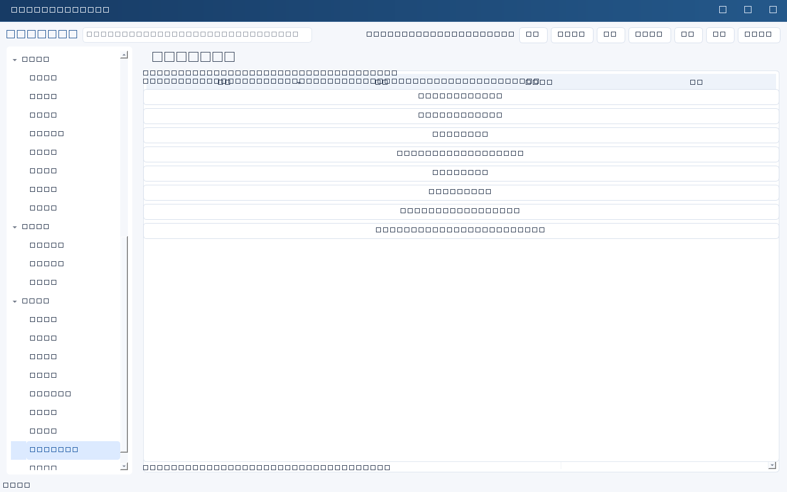

先区分导出与备份
“系统与导入导出” → “完整导出 JSON / Excel”保存业务记录到客户端所选路径。这里的“完整”指业务记录，不包括完整数据库中的渠道、模型、提示词历史、草稿、发送、审计或密钥；不能替代SQLite备份。默认业务导出不含已归档记录。
导出会提示包含人员、考核和权限资料。Excel按模块分表，保留ID、版本及完整记录JSON列；文本以文本单元格写入，降低公式注入风险。JSON为UTF-8，顶层version为1，records为列表。
导入步骤
- 先做服务端一致性备份。在测试库检查来源、字段和敏感资料授权。
- 选择“导入 JSON / 系统导出Excel（先预览）”，查看记录数、ID及错误。
- 确认无误后提交；服务端在同一事务中验证并写入，失败不应仅导入前几行。
- 刷新，核对关联、日期、任务状态、金额及抽样内容；查看审计批次。
重复ID默认拒绝覆盖，也不按Excel行号覆盖。要合并同一数据库，应在界面编辑记录；不要为了绕过重复错误随意改ID，否则可能破坏关联。
数据格式
{
"version": 1,
"records": [{
"id": "PLANS-DEMO-001", "module": "plans", "version": 1,
"data": {"名称": "示例规划", "状态": "未开始"}
}]
}业务字段使用字符串；日期YYYY-MM-DD，金额非负十进制文本。若包含created/updated，需带时区ISO时间且创建不晚于更新。模块和字段必须存在；关联ID要么已在库中，要么在同一批次内。请求体上限约4MB，大批量需拆分并保持引用关系。
Excel兼容范围
支持本系统导出工作簿，以及按模块中文名称/英文键命名工作表、首行使用schema字段名的工作簿；需保留id。可见字段列优先于完整记录JSON备份列，改列值后仍需预览确认。已有“IT负责人日常工作台”20表模板提供已知表名与字段别名映射：00使用说明与19填写示例跳过，01至18业务表转换为相应模块，未映射补充字段尽量保存在证据/备注等文本中。未知非空工作表拒绝导入，不是任意Excel通用识别。请核对原模板中的关联ID、日期、状态及证据字段，不符合服务规则的数据仍会失败。导入预览如不符合预期，不要提交。
导入不是恢复：恢复全部配置、审计和调度需使用SQLite一致性备份。不得把密钥手工写进业务文本后期待导出自动识别并删除。

